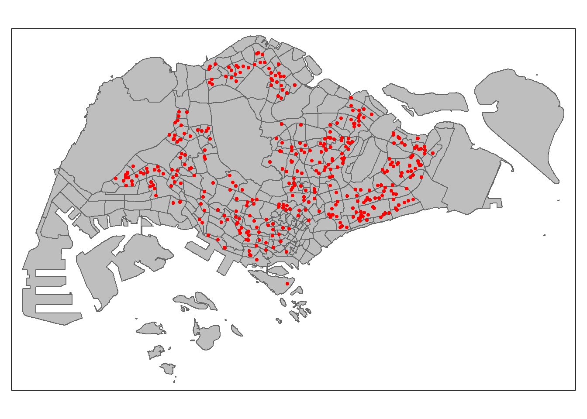
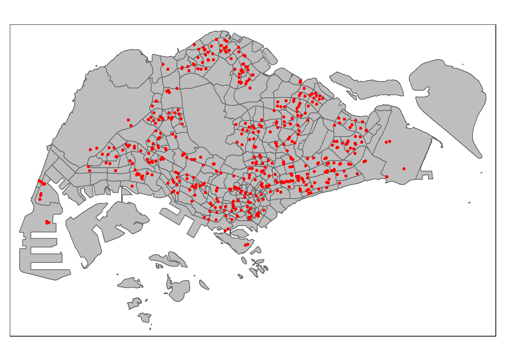

pacman::p_load(tidyverse, sf, spdep, GWmodel, SpatialML, spatstat, units, gtsummary,
tmap, rsample, Metrics, httr, jsonlite, rvest, olsrr, corrplot, ggpubr)Take-home Exercise 3b: Geospatial Analytics
1 Overview
For take-home exercise 3, it consists of 2 options: Take-home Exercise 3a: Modelling Geography of Financial Inclusion with Geographically Weighted Methods & Take-home Exercise 3b: Predicting HDB Resale Prices with Geographically Weighted Machine Learning Methods. The selected option for this take-home exercise will be 3b.
Housing plays a crucial role in household wealth across the globe, with purchasing a home representing a significant investment for most individuals. Housing prices are influenced by a variety of factors. Some of these factors are global, such as the overall economic conditions of a country or the inflation rate, while others are specific to individual properties. These factors can be categorised into structural and locational components.
Structural factors relate directly to the characteristics of the property, such as its size, amenities, and tenure.
Locational factors pertain to the surrounding environment, including proximity to childcare centres, public transportation, and shopping facilities.
Traditionally, predictive models for housing resale prices have been developed using the Ordinary Least Squares (OLS) method. However, this approach does not account for spatial autocorrelation and spatial heterogeneity present in geographic datasets, such as those related to housing transactions. When spatial autocorrelation is present, OLS estimates can produce biased, inconsistent, or inefficient results (Anselin 1998). To address this limitation, Geographically Weighted Models (GWMs) have been introduced, offering a more accurate approach to modelling and predicting housing resale prices.
1.1 Task and Outcomes
For this take-home exercise, the primary dataset should be the HDB Resale Flat Prices available on data.gov.sg The analysis should concentrate on one specific flat type: three-room, four-room, or five-room flats.
The following is a list of suggested predictors to consider, though students are encouraged to include any other relevant independent variables that may enhance the analysis.
- Structural factors
- Area of the unit
- Floor level
- Remaining lease
- Age of the unit
- Main Upgrading Program (MUP) completed (optional)
- Locational factors
- Proximity to CBD
- Proximity to eldercare
- Proximity to foodcourt/hawker centres
- Proximity to MRT
- Proximity to park
- Proximity to good primary school
- Proximity to shopping mall
- Proximity to supermarket
- Numbers of kindergartens within 350m
- Numbers of childcare centres within 350m
- Numbers of bus stop within 350m
- Numbers of primary school within 1km
The four-room flats will be the chosen flat type for analysis as it is one of the most common HDB BTO flat types, which offers a comfortable living space for young couples and families.
Additionally, in this take-home exercise, we are tasked with calibrating a predictive model to forecast HDB resale prices for the period of July to September 2024, using resale transaction data from 2023 as the basis for analysis.
2 Installing and Loading R Packages
The code chunk below will ensure for a list of required R packages to be created, checked for installation, and installed if missing. Once installed, all packages will be loaded for use in the exercise.
3 The Data
The following sections will consist of steps which import, process and wrangling of data.
3.1 HDB resale Data
Data used for this exercise is HDB Resale data: a list of HDB resale transacted prices in Singapore from Jan 2017 onwards. It is in csv format which can be downloaded from data.gov.sg.
When first downloaded, the data was labelled as ResaleflatpricesbasedonregistrationdatefromJan2017onwards. Hence, it was subsequently renamed to resale for ease of referencing and to avoid unnecessary mistakes. Similar to what is required in the task of using HDB resale transaction records in 2023 to predict HDB resale prices between July-September 2024 the code chunk below filters for transaction records for the entirety of 2023 and July till September 2024.
resale <- read_csv("data/HDB/rawdata/resale.csv") %>%
filter(month >= "2023-01" & month <= "2024-09")Based on the requirements of this exercise, I have decided to focus my study on four-room flats.
roomtype = c('4 ROOM') # '3 ROOM', '4 ROOM', '5 ROOM'
resale = resale%>%
filter(flat_type %in% roomtype)The observations have been reduced to 20663.
The code chunk below serves the functions of combining block and street_name variables to create a new variable address (excluding unit number) alongside remaining_lease_yr and remaining_lease_mth extracted from remaining_lease. This function will supplement our steps later on in creating the model.
resale_tidy <- resale %>%
mutate(address = paste(block,street_name)) %>%
mutate(remaining_lease_yr = as.integer(
str_sub(remaining_lease, 0, 2)))%>%
mutate(remaining_lease_mth = as.integer(
str_sub(remaining_lease, 9, 11)))Code chunk below sorts a list of unique addresses to avoid the issue of repeated geocoding.
add_list <- sort(unique(resale_tidy$address))The following code chunks are used to obtain the postal code of the addresses using geocoding.
get_coords <- function(add_list){
# Create a data frame to store all retrieved coordinates
postal_coords <- data.frame()
for (i in add_list){
#print(i)
r <- GET('https://www.onemap.gov.sg/api/common/elastic/search?',
query=list(searchVal=i,
returnGeom='Y',
getAddrDetails='Y'))
data <- fromJSON(rawToChar(r$content))
found <- data$found
res <- data$results
# Create a new data frame for each address
new_row <- data.frame()
# If single result, append
if (found == 1){
postal <- res$POSTAL
lat <- res$LATITUDE
lng <- res$LONGITUDE
new_row <- data.frame(address= i,
postal = postal,
latitude = lat,
longitude = lng)
}
# If multiple results, drop NIL and append top 1
else if (found > 1){
# Remove those with NIL as postal
res_sub <- res[res$POSTAL != "NIL", ]
# Set as NA first if no Postal
if (nrow(res_sub) == 0) {
new_row <- data.frame(address= i,
postal = NA,
latitude = NA,
longitude = NA)
}
else{
top1 <- head(res_sub, n = 1)
postal <- top1$POSTAL
lat <- top1$LATITUDE
lng <- top1$LONGITUDE
new_row <- data.frame(address= i,
postal = postal,
latitude = lat,
longitude = lng)
}
}
else {
new_row <- data.frame(address= i,
postal = NA,
latitude = NA,
longitude = NA)
}
# Add the row
postal_coords <- rbind(postal_coords, new_row)
}
return(postal_coords)
}coords <- get_coords(add_list)The following code chunk will be used to save the results to avoid having to re-run the code chunks above which will take up additional time and resources.
write_rds(coords, "data/HDB/rds/coords.rds")coords <- read_rds('data/HDB/rds/coords.rds')3.2 Structural factors
- Structural factors
- Area of the unit
- Floor level
- Remaining lease
- Age of the unit
- Main Upgrading Program (MUP) completed (optional)
3.3 Setting CRS
The code chunk below first creates an sf object before the EPSG code is set for Singapore which is 4326
resale_tidy <- resale_tidy %>%
left_join(coords, by = c("address" = "address")) %>%
st_as_sf(coords = c("longitude", "latitude"), crs = 4326) %>%
st_transform(crs = 3414)
write_rds(resale_tidy, "data/HDB/rds/resale.rds")resale_tidy <- read_rds("data/HDB/rds/resale.rds")3.3.1 Floor Level
As one of the structural factors the code chunk below is used to view the floor levels in resale_tidy
unique(resale_tidy$storey_range) [1] "07 TO 09" "10 TO 12" "01 TO 03" "04 TO 06" "16 TO 18" "25 TO 27"
[7] "13 TO 15" "22 TO 24" "19 TO 21" "28 TO 30" "34 TO 36" "43 TO 45"
[13] "31 TO 33" "46 TO 48" "40 TO 42" "37 TO 39" "49 TO 51"As the variable for storey_range is in string, we will generate it as numeric. However, the storey_range as stated follows a range which will make it hard for analysis. Hence, this numeric attribute will be transformed based on the median value ensuring that we have values to work with instead of a range.
resale_tidy <- resale_tidy %>%
mutate(
level = (as.numeric(str_extract(storey_range, "^[0-9]+")) +
as.numeric(str_extract(storey_range, "[0-9]+$"))) / 2
)3.3.2 Remaining Lease & Age of Unit
We will also do some data wrangling for remaining_lease_yr & remaining_lease_mth
resale_tidy <- resale_tidy %>%
mutate(
# Replace NA in months with 0 as observed in resale_tidy
remaining_lease_mth = if_else(is.na(remaining_lease_mth), 0, remaining_lease_mth),
# Calculate remaining lease in decimal years
remaining_lease = remaining_lease_yr + (remaining_lease_mth / 12),
# Age of unit calculation based on a HDB 99-year lease
unit_age = 99 - remaining_lease
) %>%
select(-remaining_lease_yr, -remaining_lease_mth)3.4 Locational factors
The following locational factors will be derived from their respective data sources such as from data.gov.sg for this exercise.
- Locational factors
- Proximity to CBD
- Proximity to elder care
- Proximity to hawker centres
- Proximity to MRT
- Proximity to park
- Proximity to CHAS Clinics
- Proximity to good primary school
- Proximity to shopping mall
- Proximity to supermarket
- Numbers of kindergartens within 350m
- Numbers of childcare centres within 350m
- Numbers of bus stop within 350m
- Numbers of primary school within 1km
3.5 Geospatial Data
Based on the locational factors above, we will import these geospatial data into the R environment.
mpsz <- st_read(dsn = "data/geospatial", layer = "MP14_SUBZONE_WEB_PL") %>%
st_transform(3414)Reading layer `MP14_SUBZONE_WEB_PL' from data source
`C:\zjho008\ISSS626-GAA\Take-home_Ex\Take-home_Ex03\data\geospatial'
using driver `ESRI Shapefile'
Simple feature collection with 323 features and 15 fields
Geometry type: MULTIPOLYGON
Dimension: XY
Bounding box: xmin: 2667.538 ymin: 15748.72 xmax: 56396.44 ymax: 50256.33
Projected CRS: SVY21mpszSimple feature collection with 323 features and 15 fields
Geometry type: MULTIPOLYGON
Dimension: XY
Bounding box: xmin: 2667.538 ymin: 15748.72 xmax: 56396.44 ymax: 50256.33
Projected CRS: SVY21 / Singapore TM
First 10 features:
OBJECTID SUBZONE_NO SUBZONE_N SUBZONE_C CA_IND PLN_AREA_N
1 1 1 MARINA SOUTH MSSZ01 Y MARINA SOUTH
2 2 1 PEARL'S HILL OTSZ01 Y OUTRAM
3 3 3 BOAT QUAY SRSZ03 Y SINGAPORE RIVER
4 4 8 HENDERSON HILL BMSZ08 N BUKIT MERAH
5 5 3 REDHILL BMSZ03 N BUKIT MERAH
6 6 7 ALEXANDRA HILL BMSZ07 N BUKIT MERAH
7 7 9 BUKIT HO SWEE BMSZ09 N BUKIT MERAH
8 8 2 CLARKE QUAY SRSZ02 Y SINGAPORE RIVER
9 9 13 PASIR PANJANG 1 QTSZ13 N QUEENSTOWN
10 10 7 QUEENSWAY QTSZ07 N QUEENSTOWN
PLN_AREA_C REGION_N REGION_C INC_CRC FMEL_UPD_D X_ADDR
1 MS CENTRAL REGION CR 5ED7EB253F99252E 2014-12-05 31595.84
2 OT CENTRAL REGION CR 8C7149B9EB32EEFC 2014-12-05 28679.06
3 SR CENTRAL REGION CR C35FEFF02B13E0E5 2014-12-05 29654.96
4 BM CENTRAL REGION CR 3775D82C5DDBEFBD 2014-12-05 26782.83
5 BM CENTRAL REGION CR 85D9ABEF0A40678F 2014-12-05 26201.96
6 BM CENTRAL REGION CR 9D286521EF5E3B59 2014-12-05 25358.82
7 BM CENTRAL REGION CR 7839A8577144EFE2 2014-12-05 27680.06
8 SR CENTRAL REGION CR 48661DC0FBA09F7A 2014-12-05 29253.21
9 QT CENTRAL REGION CR 1F721290C421BFAB 2014-12-05 22077.34
10 QT CENTRAL REGION CR 3580D2AFFBEE914C 2014-12-05 24168.31
Y_ADDR SHAPE_Leng SHAPE_Area geometry
1 29220.19 5267.381 1630379.3 MULTIPOLYGON (((31495.56 30...
2 29782.05 3506.107 559816.2 MULTIPOLYGON (((29092.28 30...
3 29974.66 1740.926 160807.5 MULTIPOLYGON (((29932.33 29...
4 29933.77 3313.625 595428.9 MULTIPOLYGON (((27131.28 30...
5 30005.70 2825.594 387429.4 MULTIPOLYGON (((26451.03 30...
6 29991.38 4428.913 1030378.8 MULTIPOLYGON (((25899.7 297...
7 30230.86 3275.312 551732.0 MULTIPOLYGON (((27746.95 30...
8 30222.86 2208.619 290184.7 MULTIPOLYGON (((29351.26 29...
9 29893.78 6571.323 1084792.3 MULTIPOLYGON (((20996.49 30...
10 30104.18 3454.239 631644.3 MULTIPOLYGON (((24472.11 29...The extent of mpsz is shown by using st_bbox() of sf package.
st_bbox(mpsz) #view extent xmin ymin xmax ymax
2667.538 15748.721 56396.440 50256.334 eldercare <- st_read(dsn = "data/geospatial", layer = "ELDERCARE") %>%
st_transform(3414)Reading layer `ELDERCARE' from data source
`C:\zjho008\ISSS626-GAA\Take-home_Ex\Take-home_Ex03\data\geospatial'
using driver `ESRI Shapefile'
Simple feature collection with 133 features and 18 fields
Geometry type: POINT
Dimension: XY
Bounding box: xmin: 14481.92 ymin: 28218.43 xmax: 41665.14 ymax: 46804.9
Projected CRS: SVY21chas <- st_read("data/geospatial/CHASClinics.kml") %>%
st_transform(crs = 3414)Reading layer `MOH_CHAS_CLINICS' from data source
`C:\zjho008\ISSS626-GAA\Take-home_Ex\Take-home_Ex03\data\geospatial\CHASClinics.kml'
using driver `KML'
Simple feature collection with 1193 features and 2 fields
Geometry type: POINT
Dimension: XYZ
Bounding box: xmin: 103.5818 ymin: 1.016264 xmax: 103.9903 ymax: 1.456037
z_range: zmin: 0 zmax: 0
Geodetic CRS: WGS 84childcare <- st_read("data/geospatial/ChildCareServices.kml") %>%
st_transform(crs = 3414)Reading layer `CHILDCARE' from data source
`C:\zjho008\ISSS626-GAA\Take-home_Ex\Take-home_Ex03\data\geospatial\ChildCareServices.kml'
using driver `KML'
Simple feature collection with 1925 features and 2 fields
Geometry type: POINT
Dimension: XYZ
Bounding box: xmin: 103.6878 ymin: 1.247759 xmax: 103.9897 ymax: 1.462134
z_range: zmin: 0 zmax: 0
Geodetic CRS: WGS 84kindergartens <- st_read("data/geospatial/Kindergartens.geojson") %>%
st_transform(crs = 3414)Reading layer `Kindergartens' from data source
`C:\zjho008\ISSS626-GAA\Take-home_Ex\Take-home_Ex03\data\geospatial\Kindergartens.geojson'
using driver `GeoJSON'
Simple feature collection with 448 features and 2 fields
Geometry type: POINT
Dimension: XYZ
Bounding box: xmin: 103.6887 ymin: 1.247759 xmax: 103.9717 ymax: 1.455452
z_range: zmin: 0 zmax: 0
Geodetic CRS: WGS 84parks <- st_read("data/geospatial/Parks.geojson") %>%
st_transform(crs = 3414)Reading layer `Parks' from data source
`C:\zjho008\ISSS626-GAA\Take-home_Ex\Take-home_Ex03\data\geospatial\Parks.geojson'
using driver `GeoJSON'
Simple feature collection with 430 features and 2 fields
Geometry type: POINT
Dimension: XYZ
Bounding box: xmin: 103.6929 ymin: 1.214491 xmax: 104.0538 ymax: 1.462094
z_range: zmin: 0 zmax: 0
Geodetic CRS: WGS 84hawker_centre <- st_read("data/geospatial/HawkerCentresGEOJSON.geojson") %>%
st_transform(crs = 3414)Reading layer `HawkerCentresGEOJSON' from data source
`C:\zjho008\ISSS626-GAA\Take-home_Ex\Take-home_Ex03\data\geospatial\HawkerCentresGEOJSON.geojson'
using driver `GeoJSON'
Simple feature collection with 125 features and 2 fields
Geometry type: POINT
Dimension: XYZ
Bounding box: xmin: 103.6974 ymin: 1.272716 xmax: 103.9882 ymax: 1.449017
z_range: zmin: 0 zmax: 0
Geodetic CRS: WGS 84supermarkets <- st_read("data/geospatial/SupermarketsGEOJSON.geojson") %>%
st_transform(crs = 3414)Reading layer `SupermarketsGEOJSON' from data source
`C:\zjho008\ISSS626-GAA\Take-home_Ex\Take-home_Ex03\data\geospatial\SupermarketsGEOJSON.geojson'
using driver `GeoJSON'
Simple feature collection with 526 features and 2 fields
Geometry type: POINT
Dimension: XYZ
Bounding box: xmin: 103.6258 ymin: 1.24715 xmax: 104.0036 ymax: 1.461526
z_range: zmin: 0 zmax: 0
Geodetic CRS: WGS 84bus_stops <- st_read(dsn = "data/geospatial", layer = "BusStop") %>%
st_transform(crs = 3414) %>%
filter(lengths(st_within(., mpsz)) > 0)Reading layer `BusStop' from data source
`C:\zjho008\ISSS626-GAA\Take-home_Ex\Take-home_Ex03\data\geospatial'
using driver `ESRI Shapefile'
Simple feature collection with 5166 features and 3 fields
Geometry type: POINT
Dimension: XY
Bounding box: xmin: 3970.122 ymin: 26482.1 xmax: 48285.52 ymax: 52983.82
Projected CRS: SVY21MRT <- st_read(dsn = "data/geospatial", layer = "RapidTransitSystemStation") %>%
st_transform(crs = 3414)Reading layer `RapidTransitSystemStation' from data source
`C:\zjho008\ISSS626-GAA\Take-home_Ex\Take-home_Ex03\data\geospatial'
using driver `ESRI Shapefile'
Simple feature collection with 230 features and 5 fields (with 1 geometry empty)
Geometry type: POLYGON
Dimension: XY
Bounding box: xmin: 6068.209 ymin: 27478.44 xmax: 45377.5 ymax: 47913.58
Projected CRS: SVY21Sys.setenv(OGR_GEOMETRY_ACCEPT_UNCLOSED_RING = "NO")
MRT <- MRT[!st_is_empty(MRT), ]
# Convert Polygon to Point
MRT <- st_centroid(MRT)3.5.1 Pre processing Geospatial Data
In the previous section, we have loaded the geospatial data of interest it was also observed that some of this data consisted of the Z dimension. We will proceed to remove them as well as drop and unnecessary columns to reduce computation time and ensure geometries are valid.
chas <- st_zm(chas)
childcare <- st_zm(childcare)
kindergartens <- st_zm(kindergartens)
parks <- st_zm(parks)
hawker_centre <- st_zm(hawker_centre)
supermarkets <- st_zm(supermarkets)The code chunks below are used to remove columns not exactly needed to do analysis as the needed variables are generally the Name for identification and Geometry variables
eldercare <- eldercare %>%
select(c(1))
chas <- chas %>%
select(c(1))
childcare <- childcare %>%
select(c(1))
kindergartens <- kindergartens %>%
select(c(1))
parks <- parks %>%
select(c(1))
hawker_centre <- hawker_centre %>%
select(c(1))
supermarkets <- supermarkets %>%
select(c(1))
bus_stops <- bus_stops %>%
select(c(1))
MRT <- MRT %>%
select(c(5))length(which(st_is_valid(mpsz) == FALSE))[1] 9length(which(st_is_valid(eldercare) == FALSE))[1] 0length(which(st_is_valid(chas) == FALSE))[1] 0length(which(st_is_valid(childcare) == FALSE))[1] 0length(which(st_is_valid(kindergartens) == FALSE))[1] 0length(which(st_is_valid(parks) == FALSE))[1] 0length(which(st_is_valid(hawker_centre) == FALSE))[1] 0length(which(st_is_valid(supermarkets) == FALSE))[1] 0length(which(st_is_valid(bus_stops) == FALSE))[1] 0length(which(st_is_valid(MRT) == FALSE))[1] 04 Visualising the Data
In this section we will do quick visualisations without much customisations to ensure that the data is appropriate before proceeding.
tm_shape(mpsz) +
tm_polygons(col = "grey")tm_shape(mpsz) +
tm_polygons(col = "grey") +
tm_shape(eldercare) +
tm_dots(col = "red", size = 0.1)tm_shape(mpsz) +
tm_polygons(col = "grey") +
tm_shape(chas) +
tm_dots(col = "red")
tm_shape(mpsz) +
tm_polygons(col = "grey") +
tm_shape(childcare) +
tm_dots(col = "red")
tm_shape(mpsz) +
tm_polygons(col = "grey") +
tm_shape(kindergartens) +
tm_dots(col = "red", size = 0.08)tm_shape(mpsz) +
tm_polygons(col = "grey") +
tm_shape(parks) +
tm_dots(col = "red", size = 0.08)
tm_shape(mpsz) +
tm_polygons(col = "grey") +
tm_shape(hawker_centre) +
tm_dots(col = "red", size = 0.1)
tm_shape(mpsz) +
tm_polygons(col = "grey") +
tm_shape(supermarkets) +
tm_dots(col = "red", size = 0.08)tm_shape(mpsz) +
tm_polygons(col = "grey") +
tm_shape(bus_stops) +
tm_dots(col = "red", size = 0.005)tm_shape(mpsz) +
tm_polygons(col = "grey") +
tm_shape(MRT) +
tm_dots(col = "red", size = 0.1)
Based on the above visualisations the data points look in place without any abnomalities.
5 Locational Factors (Proximity Calculation)
Now to calculate the proximity of HDB flats to relevant facilities. The provided proximity function streamlines this process by calculating the minimum distance from each feature in df1 to the nearest feature in df2 and assigning this distance to a new column specified by varname.
The following locational factors will be calculated in terms of proximity:
- Proximity to CBD (Raffles Place & Tanjong Pagar MRT)
- Proximity to eldercare
- Proximity to CHAS Clinics
- Proximity to hawker centres
- Proximity to MRT
- Proximity to park
- Proximity to supermarket
- Numbers of kindergartens within 350m
- Numbers of childcare centres within 350m
- Numbers of bus stop within 350mproximity <- function(df1, df2, varname) {
dist_matrix <- st_distance(df1, df2) %>%
drop_units()
# Calculate minimum distance for each row
df1[[varname]] <- apply(dist_matrix, 1, min)
return(df1)
}cbd <- filter(MRT, STN_NAM_DE %in% c("RAFFLES PLACE MRT STATION", "TANJONG PAGAR MRT STATION"))
resale_tidy <- proximity(resale_tidy, cbd, "PROX_CBD") %>%
proximity(., eldercare, "PROX_ELDERCARE") %>%
proximity(., chas, "PROX_CHAS") %>%
proximity(., hawker_centre, "PROX_HAWKER") %>%
proximity(., MRT, "PROX_MRT") %>%
proximity(., parks, "PROX_PARK") %>%
proximity(., childcare, "PROX_CHILDCARE") %>%
proximity(., kindergartens, "PROX_KINDERGARTEN") %>%
proximity(., supermarkets, "PROX_SUPERMARKET") %>%
proximity(., bus_stops, "PROX_BUS_STOP")We also need to calculate the number of facilities within a specific radius from the resale flats. The count_in_radius function accomplishes this by calculating the distance matrix between df1 and df2 using st_distance, identifying features within the specified radius, and summing these counts in a new column in df1 designated by varname.
count_in_radius <- function(df1, df2, varname, radius) {
dist_matrix <- st_distance(df1, df2) %>%
drop_units() %>%
as.data.frame()
df1[,varname] <- rowSums(dist_matrix <= radius)
return(df1)
}resale_tidy <- count_in_radius(resale_tidy, kindergartens, "NUM_KINDERGARTEN", 350) %>%
count_in_radius(., childcare, "NUM_CHILDCARE", 350) %>%
count_in_radius(., bus_stops, "NUM_BUS_STOP", 350) %>%
count_in_radius(., chas, "NUM_CHAS", 350)Columns which are not needed for this analysis in this exercise will be dropped and the file is then saved as a RDS file for ease of retrieval without the need to run the above code chunks again.
resale_tidy <- resale_tidy %>%
rename(
MONTH = month,
TOWN = town,
FLOOR_AREA_SQM = floor_area_sqm,
ADDRESS = address,
RESALE_PRICE = resale_price,
LEVEL = level,
REMAINING_LEASE = remaining_lease,
UNIT_AGE = unit_age
) %>%
select(MONTH, TOWN, FLOOR_AREA_SQM, ADDRESS, RESALE_PRICE, LEVEL, REMAINING_LEASE,
UNIT_AGE, PROX_CBD, PROX_ELDERCARE, PROX_CHAS, PROX_HAWKER, PROX_MRT, PROX_PARK,
PROX_CHILDCARE, PROX_KINDERGARTEN, PROX_SUPERMARKET, PROX_BUS_STOP, NUM_KINDERGARTEN,
NUM_CHILDCARE, NUM_BUS_STOP, NUM_CHAS)
write_rds(resale_tidy, "data/HDB/rds/final_resale.rds")6 Exploratory Data Analysis (EDA)
In the section, it will make use of statistical graphics functions of ggplot2 package to perform EDA on resale_tidy
6.1 EDA using statistical graphics
6.1.1 Resale Price
ggplot(data = resale_tidy, aes(x = `RESALE_PRICE`)) +
geom_histogram(bins = 20, color = "black", fill = "salmon")The figure above reveals a right skewed distribution. This means that more 4-room resale units were transacted at relative lower prices ranging from $400,000 to $600,000 price range.
6.1.2 Multiple Histogram Plots for Locational Factors
The code chunk below is used to create 12 histograms. Then, ggarrange() is used to organised the histograms into a 3 column by 4 row small multiple plot.
AREA_SQM <- ggplot(data = resale_tidy, aes(x= `FLOOR_AREA_SQM`)) +
geom_histogram(bins=20, color="black", fill="light blue")
AGE <- ggplot(data = resale_tidy, aes(x= `UNIT_AGE`)) +
geom_histogram(bins=20, color="black", fill="light blue")
PROX_CBD <- ggplot(data = resale_tidy, aes(x= `PROX_CBD`)) +
geom_histogram(bins=20, color="black", fill="light blue")
PROX_CHILDCARE <- ggplot(data = resale_tidy, aes(x= `PROX_CHILDCARE`)) +
geom_histogram(bins=20, color="black", fill="light blue")
PROX_ELDERCARE <- ggplot(data = resale_tidy, aes(x= `PROX_ELDERCARE`)) +
geom_histogram(bins=20, color="black", fill="light blue")
PROX_HAWKER <- ggplot(data = resale_tidy, aes(x = `PROX_HAWKER`)) +
geom_histogram(bins=20, color="black", fill="light blue")
PROX_KINDERGARTEN <- ggplot(data = resale_tidy, aes(x = `PROX_KINDERGARTEN`)) +
geom_histogram(bins=20, color="black", fill="light blue")
PROX_MRT <- ggplot(data = resale_tidy, aes(x= `PROX_MRT`)) +
geom_histogram(bins=20, color="black", fill="light blue")
PROX_PARK <- ggplot(data = resale_tidy, aes(x= `PROX_PARK`)) +
geom_histogram(bins=20, color="black", fill="light blue")
PROX_BUS_STOP <- ggplot(data = resale_tidy, aes(x= `PROX_BUS_STOP`)) +
geom_histogram(bins=20, color="black", fill="light blue")
PROX_SUPERMARKET <- ggplot(data = resale_tidy,
aes(x= `PROX_SUPERMARKET`)) +
geom_histogram(bins=20, color="black", fill="light blue")
ggarrange(AREA_SQM, AGE, PROX_CBD, PROX_CHILDCARE, PROX_ELDERCARE,
PROX_HAWKER, PROX_KINDERGARTEN, PROX_MRT,
PROX_PARK, PROX_BUS_STOP, PROX_SUPERMARKET,
ncol = 3, nrow = 4)